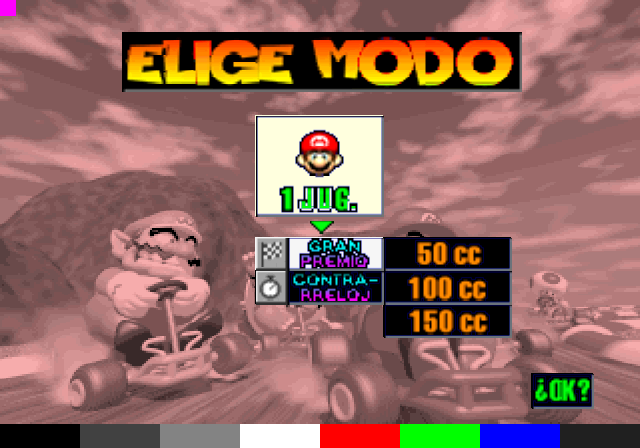
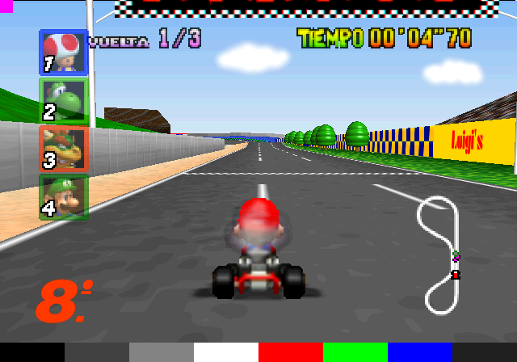
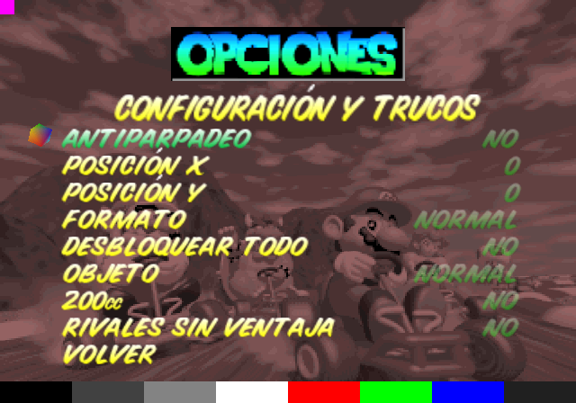

Capturas



Capturas tomadas por la CI en el emulador Play!.
Funciones
Todo en español
Menús, mensajes y texturas traducidos: BIENVENIDOS, YA, VUELTA, 1J-4J, PASO A NIVEL y los puestos con «º».
Configuración
Antiparpadeo, posición X/Y de la imagen y formato NORMAL, CON BANDAS o PANORÁMICO. Se guarda en la Memory Card.
Trucos
Desbloquear todo, elegir objeto, 200cc en GP y VS, y rivales sin ventaja. Los récords se siguen guardando.
Sin ROM
La ISO trae el juego completo. También hay un ELF para uLaunchELF desde USB.
Cómo jugar
- Descarga la ISO (o el ELF) y
SHA256SUMSde la última versión. - Comprueba el archivo:
sha256sum -c --ignore-missing SHA256SUMS. - Ábrelo en PCSX2 o Play!, o cárgalo en una PS2 con OPL o uLaunchELF.
- Para guardar, usa una Memory Card formateada en la ranura 1.
Los detalles están en el manual de usuario. La imagen sale en NTSC a 60 Hz; con una consola PAL hace falta una TV que acepte 60 Hz.
Descarga
La ISO, el ELF monolítico y las sumas SHA-256 están en la Release de GitHub.
Última versiónAutor
Alexis Barrera, desarrollador e ingeniero de observabilidad. Mario Kart 64 es el juego de mi infancia; quise traducirlo, mejorarlo y jugarlo en mi PS2 aprovechando la descompilación.
Código, documentación y proceso en el repositorio de GitHub y en el caso de estudio.
Créditos: el port a PS2 es de anthoo582, sobre la descompilación comunitaria de Mario Kart 64.
Aviso legal
Proyecto sin fines de lucro, educativo y de preservación. No tiene afiliación con Nintendo ni con Sony ni cuenta con su aprobación. Mario Kart 64 y sus personajes son marcas de Nintendo; PlayStation 2 es una marca de Sony Interactive Entertainment. Para jugar debes tener el juego original. El proyecto se retira si el titular de los derechos lo pide. Los aportes propios de este fork tienen licencia MIT (LICENSE); el juego, sus recursos y el código del repositorio original quedan fuera.